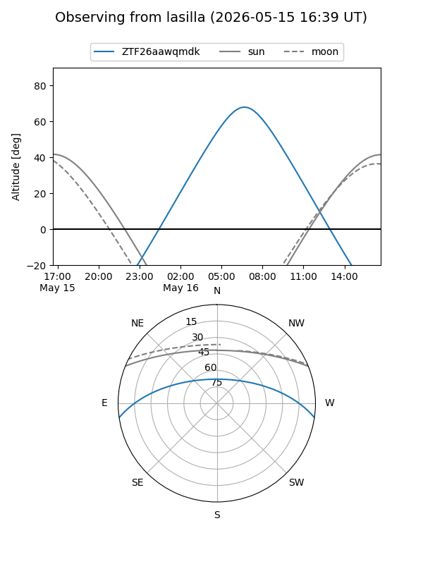
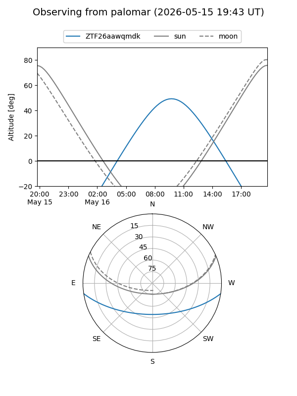

ZTF26aawqmdk
Target ZTF26aawqmdk at 2026-05-16 10:29
Aliases and brokers:
FINK: link
Lasair: link
ALeRCE: link
alt names
ZTF26aawqmdk (ztf,fink_ztf)
Coordinates:
equatorial (ra, dec) = 263.0177,-7.27648
equatorial (HMS+DMS) = 17:32:04.24,-07:16:35.33
galactic (l, b) = (17.0058,+13.99854)
Flags:
Photometry:
last ztfg=18.65
2 ztfg detections
Lightcurve
Visibility


Additional plots